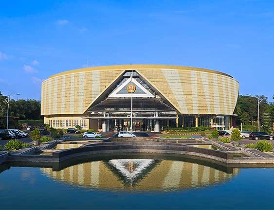

Magister Berbasis Kuliah
- 21 SKS mata kuliah wajib.
- 9 SKS mata kuliah pilihan.
- 12 SKS tesis: SUR 2 SKS, SKR 4 SKS, Sidang Akhir Magister 6 SKS.
Program Magister
Pendidikan magister 42 SKS berbasis statistika terapan, riset, komputasi, dan sains data untuk menjawab kebutuhan industri, pemerintahan, kesehatan, aktuaria, dan akademik.

Profil Program
Program ini menyiapkan lulusan yang mampu mengembangkan metode statistika, mengelola riset, dan menerapkan analisis data pada masalah nyata melalui pendekatan interdisipliner.
Struktur Kurikulum
Kurikulum OBE 2026 dirancang untuk memperkuat penguasaan teori, kemampuan analitik, kompetensi riset, rekognisi pembelajaran, dan publikasi ilmiah.
Dokumen Kurikulum
Empat PDF kurikulum ditempatkan sebagai rujukan resmi dan arsip akademik yang dapat dibuka langsung dari website.
Panduan Tesis
Rujukan resmi untuk penyusunan naskah tesis, Seminar Usulan Riset, Seminar Kemajuan Riset, dan Sidang Akhir Magister.
Kompetensi Lulusan
Siap berkarier sebagai dosen, instruktur, dan pembina akademik melalui Tri Dharma Perguruan Tinggi.
Mampu melakukan riset inovatif dalam statistika teoritis dan terapan serta menghasilkan karya ilmiah bermutu.
Memberikan layanan analisis data dan pemecahan masalah berbasis statistika untuk lembaga dan organisasi.
Bekerja sebagai profesional analitik di perusahaan, pemerintahan, industri, lembaga riset, dan jasa konsultansi.
Lulusan & Tesis
Ringkasan judul tesis, pembimbing, tema riset, dan tahun lulus berdasarkan data lulusan program magister.
Tracer Studi
Laporan tahunan tracer study diringkas sebagai blok akses cepat untuk melihat waktu tunggu kerja pertama, respons lulusan, dan indikator awal serapan lulusan.
Mata Kuliah
| Mata Kuliah | Course | SKS | Kelompok |
|---|
Materi Kuliah
Materi dari folder @Materi Kuliah disusun sebagai katalog digital agar mahasiswa dapat mencari dan membuka bahan ajar dengan cepat.
Silabus
Setiap entri memuat deskripsi, bahan kajian, dan referensi yang diekstrak dari dokumen kurikulum resmi.
Komentar & Jejak Pengunjung
Section ini disiapkan untuk komentar publik dan analytics pengunjung berbasis layanan eksternal yang aman untuk website statis.
Chatbot Akademik
Jawaban chatbot ditambatkan pada ekstraksi dokumen Kurikulum OBE 2026, dokumen kurikulum 2020-2026, panduan tesis, silabus mata kuliah, katalog materi HTML, data lulusan, tracer study, dan ringkasan administratif dari SMUP Program Magister.
Komentar publik dapat dihubungkan ke GitHub Discussions melalui Giscus, sehingga komentar tersimpan di repositori dan bisa dimoderasi.
Jumlah kunjungan, halaman populer, rujukan, perangkat, dan lokasi negara/kota sebaiknya dibaca dari dashboard analytics privat.